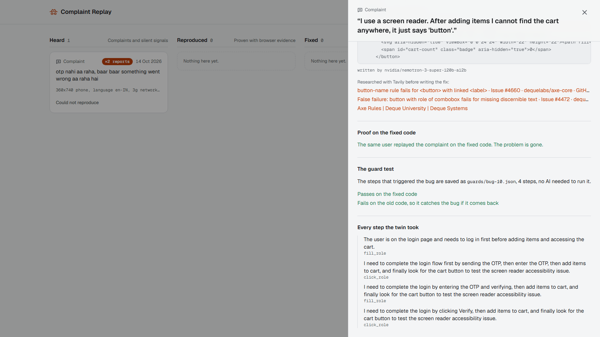
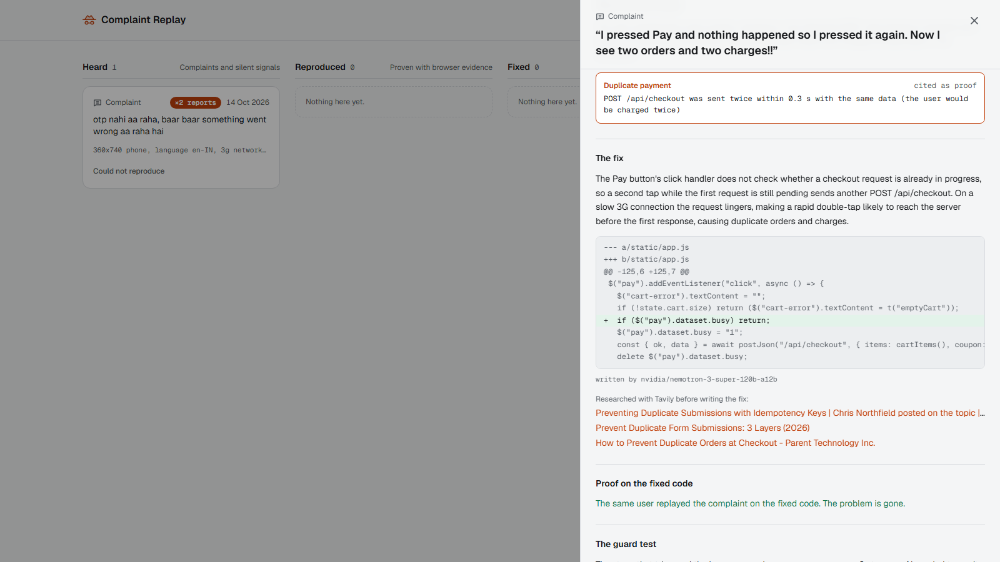

This is Complaint Replay.
In the next few minutes, you'll see what it does, how it works inside, and how well it works.
Here is the problem.
A customer writes: OTP never comes.
The developer tries it on a fast laptop with good Wi-Fi.
It works.
So the complaint is closed as: can't reproduce.
Studies of real bug trackers put that at thirteen to twenty-four percent of all bug reports.
It only shows up on the customer's slow phone, small screen, or language setting.
Complaint Replay closes that gap in six steps.
One: it hears the complaint, typed into a small widget, or a silent signal like rage clicks.
Two: an AI twin reproduces it in a real browser, under the user's real conditions.
Three: it proves the bug with machine evidence only.
Four: NVIDIA Nemotron writes the smallest fix, on a separate copy of the code.
Five: the same twin replays the complaint on the fixed code.
And six: the steps become a test, so the bug can't silently come back.
To show it working, there is a small demo shop called BadShop, with OTP login, a cart,
a coupon and a pay button.
On the dashboard, I press Break It.
That plants one secret bug in the shop.
I don't know which one.
Now I use the shop like a normal customer.
I log in, add rice to the cart, and apply the coupon SAVE10.
The cart says one hundred and sixty-two rupees.
But when I pay, I'm charged one hundred and eighty.
The coupon was never applied.
So I press Report a problem, and complain in my own words.
The widget also records my real conditions: screen size, language, network and device.
It never records what I typed into fields.
The complaint lands on the case board, in the Heard column.
Now an AI twin opens a real Chromium browser with those exact conditions, and repeats what I did,
one click at a time.
Nemotron 3 Super is the navigator.
A separate judge answers only one question: does this evidence match the complaint?
These conditions are real, not role-play.
For a slow 3G phone, the browser really adds three seconds to every request,
on a three hundred and sixty pixel screen.
For a Hindi user, the browser really runs in Hindi.
For a screen-reader user, the twin sees only the accessibility tree.
And here is the most important rule: no evidence, no verdict.
The model is not allowed to say reproduced on its own word.
Code that watches the browser collects the evidence: failed requests, server errors,
buttons pushed off screen, English errors shown to Hindi users, accessibility violations,
money values that disagree, and a payment sent twice.
If it claims a bug without evidence, the verdict is downgraded.
Once the bug is proven, the fix starts.
First, Tavily searches the web for the documented cause of the evidence,
for example the official axe rule page for a button with no name.
Then Nemotron 3 Super, with reasoning on, reads the evidence, those sources and the code,
and writes the smallest fix.
The fix goes to a separate branch copy, never to the live app, just like a pull request.
Then the same twin replays the same complaint on the fixed code.
If the evidence that proved the bug is gone, the fix is proven.
Finally, the steps that triggered the bug are saved as a test.
That test must pass on the fixed code and fail on the old code.
Only then is the case marked Guarded.
The shop has seven planted bugs, each tied to a different kind of user.
A slow phone where the OTP request gives up too early.
A small phone where the pay button is pushed off screen.
A Hindi user who gets an English-only error.
A screen-reader user who can't find the cart.
An elderly user with large text who loses the pay button.
A slow network where a double tap charges twice.
And the coupon bug you just saw.
In real life, forty people describe one bug in forty ways, in English, Hindi and Hinglish.
Each complaint is embedded with NVIDIA Nemotron Embed.
The three most similar open cases are each checked by Nemotron 3.5 Lightning: same problem, or not?
On a yes, the complaint joins that case, and the board shows how many people the bug hurts.
On held-out test data, when it merges, it's right about four times out of five.
Here are the results.
Seven bugs, three full runs each.
Twenty-one out of twenty-one reproduced.
Twenty out of twenty-one fixed and proven.
Twenty out of twenty-one guarded by a test.
And zero false alarms when the same complaints were replayed on the clean shop.
The one miss was a fix that could not be applied, so that case stopped honestly at fix failed.
Under the hood: NVIDIA Nemotron 3 Super for navigating, judging and fixing.
Nemotron Embed and Nemotron 3.5 Lightning for grouping.
Tavily for research.
Playwright drives the real browser, and axe-core checks accessibility.
All model calls go through one client, so switching to Nebius Token Factory is a single setting.
To be honest about the limits: it works on web apps, not native mobile apps.
Fixing works best for small, local bugs.
And these are seven bugs planted on purpose, so this is a working demonstration, not a broad benchmark.
Before submitting, two things remain: a Nebius Token Factory key, which the rules require,
and the final video, under three minutes.
Your angriest users are your best testers.
Complaint Replay turns their complaints into proof, a fix, and a test.
Thanks for watching.